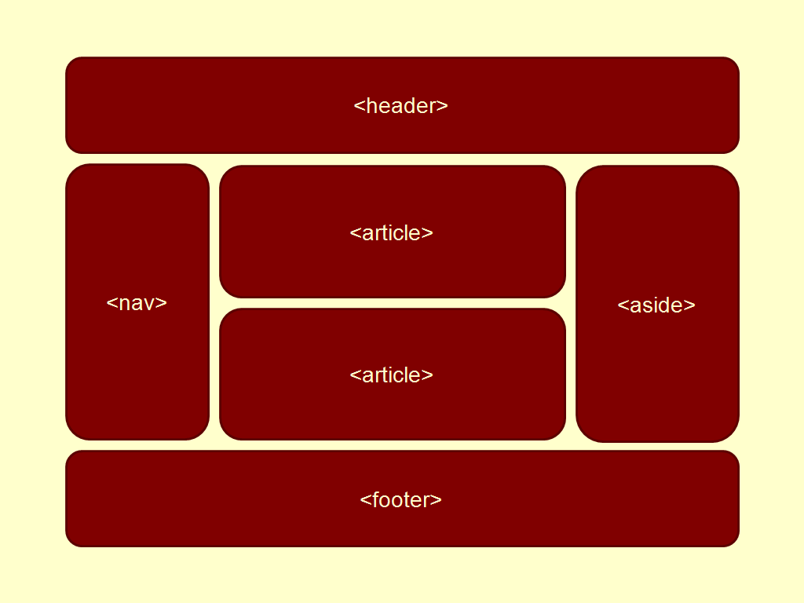

Etiqueta Semantica
Es una herramienta que ayuda a la implementación de codigos, cuya finalidad es hacer el contenido de paginas web y marcar la información de la pagina para los buscadores de la web.
https://dev.to/sapardo/etSiquetas-semanticas-de-html5-3j7m
CSS Grid

Es un diseño o prototipo para permitir crear tablas y definir tamaño, posición, y capas entre partes construido de diferentes etiquetas, y con posiblidad de muchos mas diseños y formas sencillas.